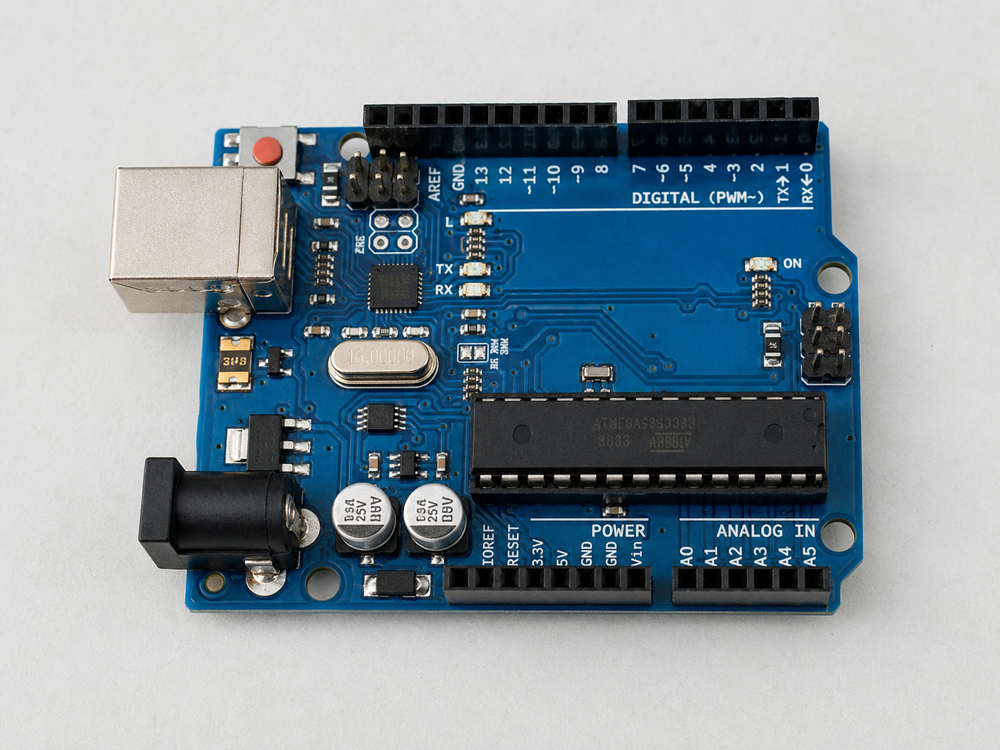
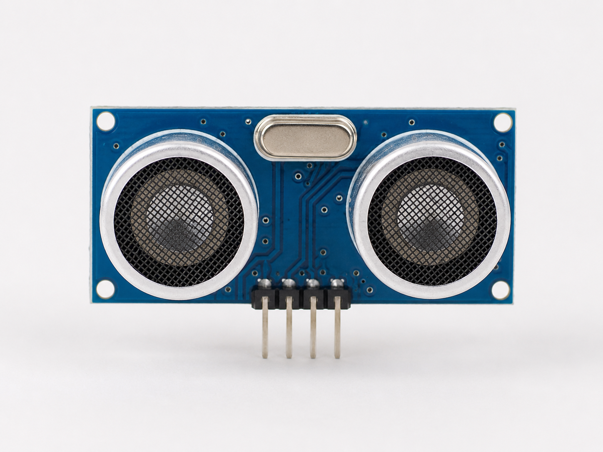
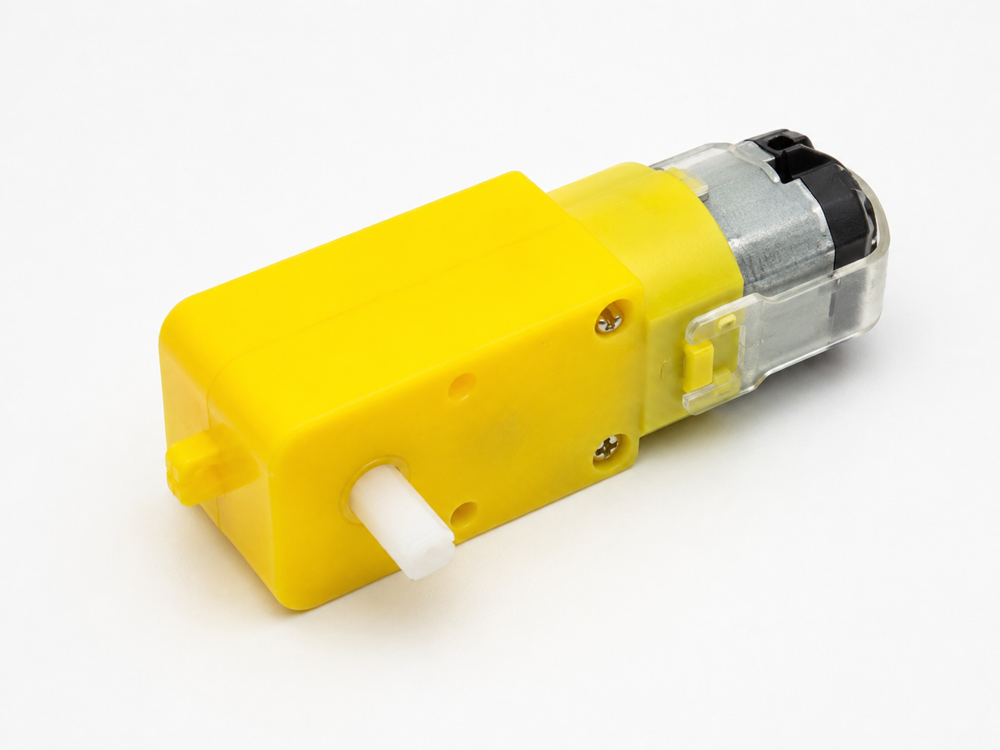
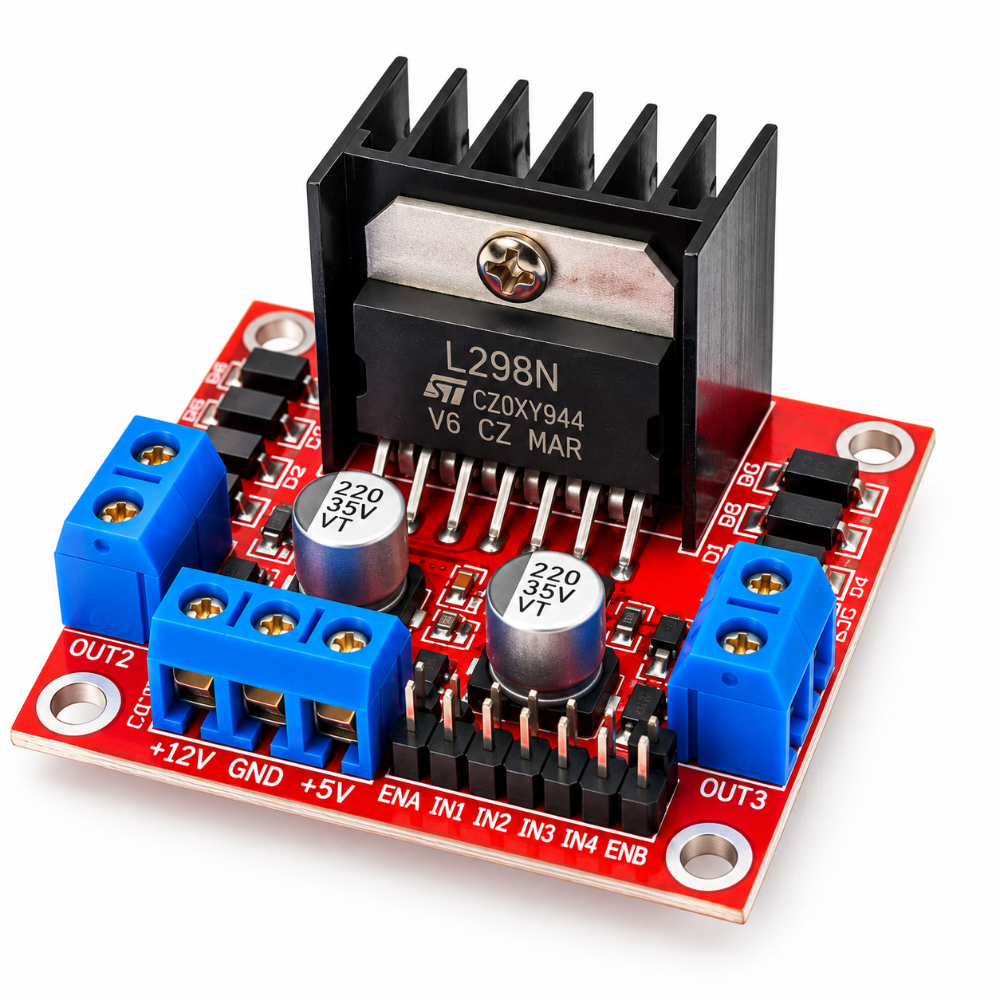

Bộ điều khiển
Arduino Uno
Nhận dữ liệu từ cảm biến và điều khiển hoạt động của robot.
- Vi điều khiển
- ATmega328P
- Kết nối
- 14 chân số · 6 chân analog
Đồ án Web Programming · Nhóm 4
Khám phá mô hình robot, đối chiếu linh kiện và thực hiện quy trình lắp ráp theo hướng dẫn từng bước.
Trạng thái phòng thực hành
Chọn mô hình, kiểm tra linh kiện và bắt đầu quy trình lắp ráp.
Khám phá robot
Chọn một trong ba mẫu thực hành, hoặc khám phá thêm các nền tảng robot qua tư liệu hình ảnh.
Linh kiện nền tảng
Mỗi mô hình robot được tạo nên từ bộ điều khiển, cảm biến, phần chuyển động và mạch điều khiển công suất.

Bộ điều khiển
Nhận dữ liệu từ cảm biến và điều khiển hoạt động của robot.

Cảm biến
Đo khoảng cách để robot nhận biết và tránh vật cản.

Chuyển động
Tạo lực quay cho bánh xe hoặc các cơ cấu chuyển động.

Điều khiển công suất
Điều khiển chiều quay và tốc độ của động cơ DC.
Nhóm thực hiện
Điều phối & tích hợp
Phụ trách trang chủ, bố cục dùng chung, kiểm tra liên kết và tích hợp toàn website.
Nội dung & cấu trúc
Phụ trách nội dung mẫu robot, linh kiện và thư viện tài liệu minh họa.
Tương tác & đa thiết bị
Phụ trách luồng lắp ráp, JavaScript tương tác và hiển thị trên nhiều thiết bị.
Quy trình sử dụng
Chọn robot dò đường, tránh vật cản hoặc cánh tay robot mini.
Đánh dấu các linh kiện đã có và nhận cảnh báo nếu còn thiếu.
Thực hiện các bước theo đúng thứ tự và theo dõi tiến độ hoàn thành.
Tính năng chính
Phòng thực hành
Chọn mẫu phù hợp, kiểm tra linh kiện cần có và làm theo từng bước lắp ráp trực quan ngay trên website.
Trước khi bắt đầu
Robot Assembly Lab giúp người mới khám phá mô hình, tra cứu linh kiện, kiểm tra mức độ sẵn sàng và theo dõi hướng dẫn lắp ráp từng bước.
Robot dò đường và robot tránh vật cản phù hợp với người mới. Cánh tay robot mini sử dụng nhiều servo và cần thêm thao tác hiệu chỉnh.
Chưa. Tiến độ thể hiện mức độ chuẩn bị linh kiện. Sau khi chuẩn bị đầy đủ, bạn thực hiện các bước hướng dẫn để lắp ráp mô hình.